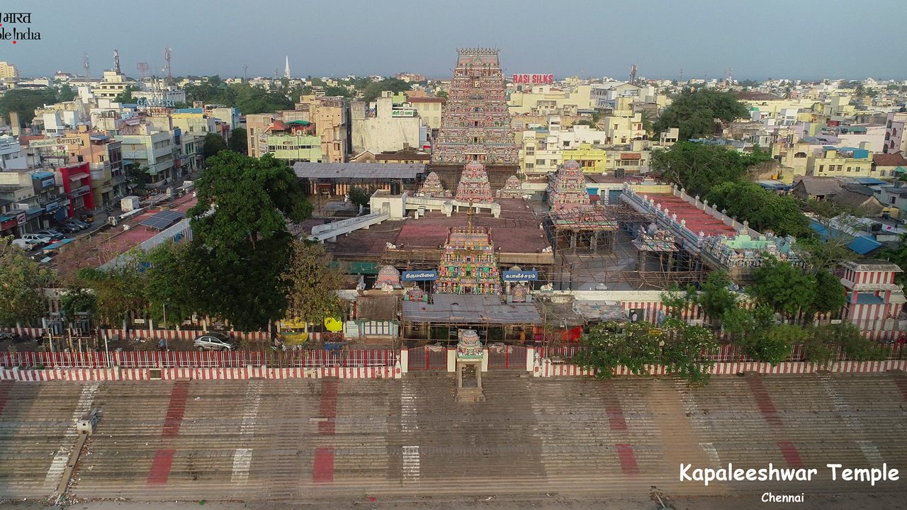
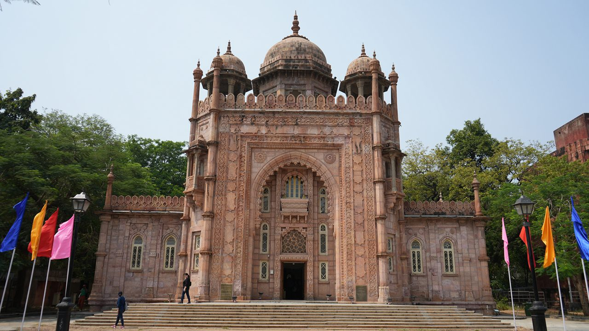
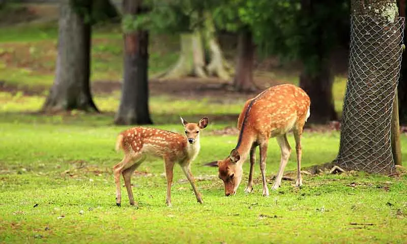
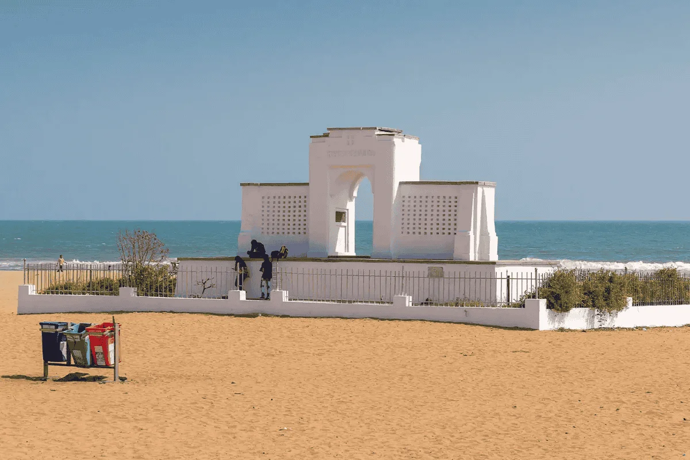

Marina Beach: Wander along the second-longest urban beach in the world. It's a great spot to enjoy ocean breezes and eat local sundal (a spiced chickpea snack).

Kapaleeswarar Temple: Located in Mylapore, this centuries-old Dravidian temple is known for its towering, colorful gopuram (entrance tower).
Fort St. George: Dive into colonial-era history at the first English fortress built in India in 1644. The site includes the Fort Museum and St. Mary’s Church

Government Museum: Head to Egmore to explore 46 galleries housing ancient bronze sculptures and the famous Amaravathi Marbles.

Guindy National Park: Take a nature walk or visit the adjoining Snake Park in this rare, protected wildlife area located right inside the city.

Besant Nagar (Elliot's Beach): A vibrant coastal neighborhood packed with great cafes, perfect for a relaxed evening stroll.